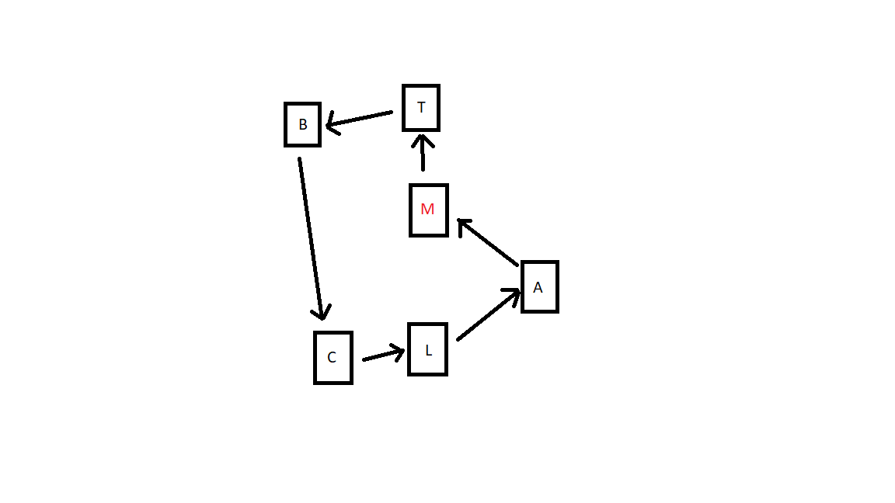

Market Navigator (100 points)
In this project you are asked to find the smallest path from the market (Migros) to houses. Imagine we have a car that gets items from the market, visits each house once and returns back to the market. You are required to:
House class, which has its name and coordinates as attributes. You are required to create getters and setters for all attributes. Optionally,
you can create helper methods to help you solve the problem. Your getters and setters should be named like getX and setX as we conventionally do. pathFinder method in MarketNavigator class. This method should:
coordinates.txt and coordinates2.txt
Migros 24 32 , A 24 35 , B 28 35 . With these, you should create 3 houses named 'Migros', 'A' and 'B' with the given coordinates as their x and y attributes.
Note that as an example Migros house should have 24 as x and 32 as y. While you calculate the distance between two houses, use their x and y coordinates.
Math.round() , as already given in the code. Using different methods to do rounding may give different results.

Notes:
question